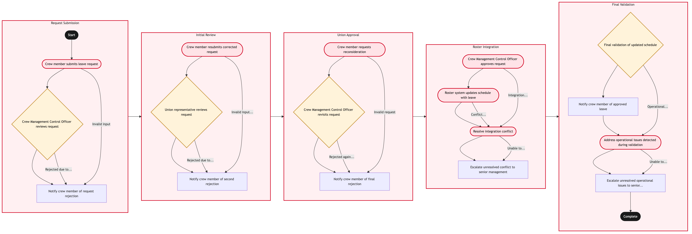

Updated 2026-08-21
Vacation and Leave Bidding
Process flow
Click to zoom

Process steps
▼
Phase 1 — Request Submission
3 steps
| Step | Activity | Role | System | Input | Output | KPI | Dec | Exc | Pain point |
|---|---|---|---|---|---|---|---|---|---|
| 1.1 | Crew member submits leave request | Crew Member | Jeppesen CrewB | Leave request form with start and end dates, type of leave | Submitted leave request in the system | 90% submission accuracy within 24 hours | N | Y | Incorrect input can delay processing. |
| 1.2 | Crew Management Control Officer reviews request | YYZ Operations Control Duty Manager | Jeppesen CrewB | Submitted leave request | Request reviewed for compliance with operational needs | 85% review accuracy within 4 hours | Y | N | Operational constraints may lead to immediate rejection. |
| 1.3 | Notify crew member of request rejection | Crew Member Services Agent | DayforceB | Rejected leave request | Notification sent to crew member | 95% notification accuracy within 1 hour | N | N | Miscommunication can lead to confusion and further delays. |
▼
Phase 2 — Initial Review
3 steps
| Step | Activity | Role | System | Input | Output | KPI | Dec | Exc | Pain point |
|---|---|---|---|---|---|---|---|---|---|
| 2.1 | Crew member resubmits corrected request | Crew Member | Jeppesen CrewB | Corrected leave request form | Resubmitted leave request in the system | 70% resubmission accuracy within 1 hour | N | Y | Persistent input errors can frustrate crew members. |
| 2.2 | Union representative reviews request | ACPA/CUPE Representative | Jeppesen CrewB | Resubmitted leave request | Request reviewed for compliance with union agreement | 90% review accuracy within 24 hours | Y | N | Union rules are complex and may require multiple interpretations. |
| 2.3 | Notify crew member of second rejection | Crew Member Services Agent | DayforceB | Rejected leave request | Notification sent to crew member | 95% notification accuracy within 1 hour | N | N | Rejection notifications can lead to morale issues. |
▼
Phase 3 — Union Approval
3 steps
| Step | Activity | Role | System | Input | Output | KPI | Dec | Exc | Pain point |
|---|---|---|---|---|---|---|---|---|---|
| 3.1 | Crew member requests reconsideration | Crew Member | Jeppesen CrewB | Request for reconsideration form | Reconsideration request in the system | 80% reconsideration accuracy within 24 hours | N | Y | Complexity of union rules can lead to lengthy reconsideration. |
| 3.2 | Crew Management Control Officer revisits request | YYZ Operations Control Duty Manager | Jeppesen CrewB | Reconsideration request | Request reviewed for final operational compliance | 80% review accuracy within 4 hours | Y | N | Final decisions must balance union rights and operational needs. |
| 3.3 | Notify crew member of final rejection | Crew Member Services Agent | DayforceB | Rejected leave request | Notification sent to crew member | 95% notification accuracy within 1 hour | N | N | Final rejections can be highly contentious. |
▼
Phase 4 — Roster Integration
4 steps
| Step | Activity | Role | System | Input | Output | KPI | Dec | Exc | Pain point |
|---|---|---|---|---|---|---|---|---|---|
| 4.1 | Crew Management Control Officer approves request | YYZ Operations Control Duty Manager | Jeppesen CrewB | Approved leave request | Leave request approved and flagged for integration | 90% approval accuracy within 24 hours | N | Y | System delays can cause operational disruptions. |
| 4.2 | Roster system updates schedule with leave | Lufthansa Systems NetLine Operator | Lufthansa Systems NetLineB | Approved leave request | Updated roster with leave days marked | 95% integration accuracy within 1 hour | N | Y | Network planning conflicts can lead to schedule disruptions. |
| 4.3 | Resolve integration conflict | YYZ Operations Control Duty Manager | Jeppesen Crew, Lufthansa Systems NetLineU | Integration conflict details | Resolved conflict and updated schedule | 85% resolution accuracy within 2 hours | N | Y | Manual intervention may be required to resolve conflicts. |
| 4.4 | Escalate unresolved conflict to senior management | Operations Manager | DayforceB | Unresolved integration conflict details | Senior management review and resolution | 75% escalation accuracy within 4 hours | N | N | Escalations can disrupt operations if not handled promptly. |
▼
Phase 5 — Final Validation
4 steps
| Step | Activity | Role | System | Input | Output | KPI | Dec | Exc | Pain point |
|---|---|---|---|---|---|---|---|---|---|
| 5.1 | Final validation of updated schedule | YYZ Operations Control Duty Manager | Jeppesen Crew, Lufthansa Systems NetLineU | Updated roster with leave days | Validated schedule without operational issues | 90% validation accuracy within 1 hour | Y | N | Validation errors can lead to last-minute changes. |
| 5.2 | Notify crew member of approved leave | Crew Member Services Agent | DayforceB | Approved leave request | Notification sent to crew member | 95% notification accuracy within 1 hour | N | N | Incorrect notifications can cause confusion. |
| 5.3 | Address operational issues detected during validation | YYZ Operations Control Duty Manager, Lufthansa Systems NetLine Operator | Jeppesen Crew, Lufthansa Systems NetLineU | Operational issue details | Resolved operational issues and updated schedule | 80% resolution accuracy within 2 hours | N | Y | Manual intervention may be required to resolve operational issues. |
| 5.4 | Escalate unresolved operational issues to senior management | Operations Manager | DayforceB | Unresolved operational issue details | Senior management review and resolution | 75% escalation accuracy within 4 hours | N | N | Escalations can disrupt operations if not handled promptly. |
Swim lanes
Crew Member1.1 2.1 3.1
YYZ Operations Control Duty Manager1.2 3.2 4.1 4.3 5.1
Crew Member Services Agent1.3 2.3 3.3 5.2
ACPA/CUPE Representative2.2
Lufthansa Systems NetLine Operator4.2
Operations Manager4.4 5.4
YYZ Operations Control Duty Manager, Lufthansa Systems NetLine Operator5.3
Systems touched
Jeppesen CrewBDayforceBLufthansa Systems NetLineBJeppesen Crew, Lufthansa Systems NetLineU
Key performance indicators
- 90% submission accuracy within 24 hours
- 85% review accuracy within 4 hours
- 70% resubmission accuracy within 1 hour
- 90% review accuracy within 24 hours
- 80% reconsideration accuracy within 24 hours
Risks and control points
- Incorrect input leading to multiple rejections and delays.
- Complex union rules causing prolonged processing times.
- System integration conflicts disrupting operational readiness.
- Manual intervention required for conflict resolution, increasing lead time.
- Operational issues detected during validation leading to last-minute changes.
Air Canada Process Wiki — process and systems reference compiled from public sources
for IT Application Management and User Support pre-sales discovery.
Built 2026-08-21. Every system carries an evidence tier: tier C is an industry pattern and tier U is an open
question, and neither should be asserted as fact about Air Canada without confirmation in discovery.
Not affiliated with or endorsed by Air Canada. Air Canada, Aeroplan and Altitude are trademarks of Air Canada.